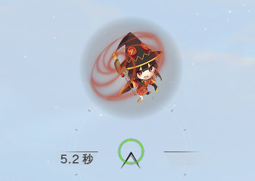

Megumin Sixth Sense
Creator
Name: yurina_taki
Website:
Twitter
Mod Information
ID: gfx.sixth_sense.megumin
Description: -KONO SUBARASHII SEKAI NI SYUKUFUKO WO!- Megumin Sixth Sense.
Explosion!: エクスプロォォーージョンッ!!
Sample Image
